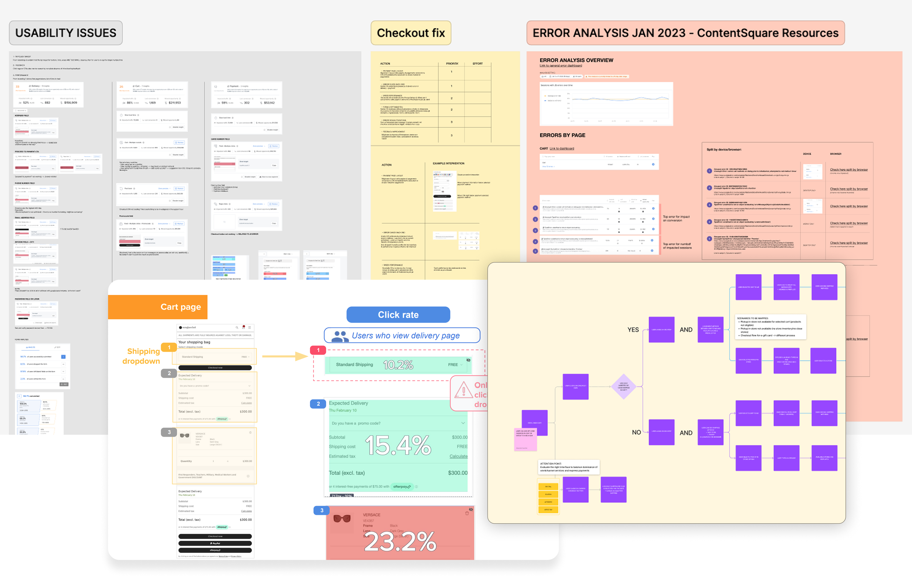
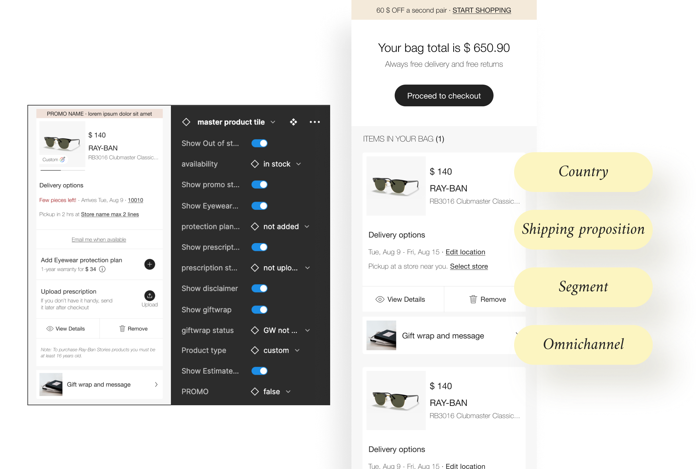

Behavioural diagnosis
Journey loops, cart performance, shipping discoverability and interaction friction.
ARCHIVE 01 · Sunglass Hut · 2022
Using behavioural evidence to turn checkout friction into a prioritised redesign and a more scalable cross-brand system.
Black Friday exposed major friction in Sunglass Hut’s cart and checkout. Users were abandoning carts, looping between Cart and Checkout, missing shipping options on mobile and encountering usability and performance issues.
Journey loops, cart performance, shipping discoverability and interaction friction.
A focused backlog spanning performance, usability, pricing clarity and mobile interaction.
Design work moving from isolated fixes toward reusable cross-brand components.



The strongest outcome was not a single screen. It was turning scattered behavioural signals into a shared product priority and a system that could scale.